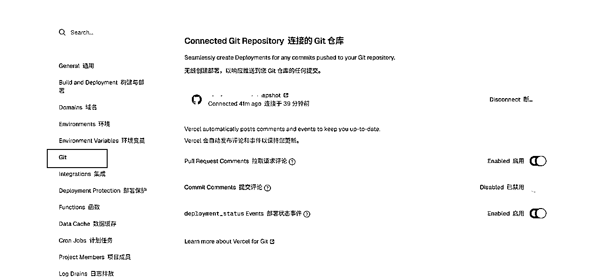

来源：https://vpbq24ngx4.feishu.cn/docx/CBwgdTihYoQCk7xsi9Uc4aq8nTf
本篇文章：
1.分享利用AI编程工具，快速构建并上线一个实用工具网站的全流程经验
2.探讨如何为数据采集类业务设计直观的展示方案，特别是通过创建“作品快照”来清晰呈现增长趋势。
3.制作一些业务提效工具站，都可以参考这套思路去快速开发与部署。
需求来源：
我每天定时采集近百个抖音对标达人最近3天的数据
情况采集到excel表格中。发送邮件
虽然每天都采集，
但是采集的达人数量接近百人，
数据太多，没法直观的看到每个爆品作品的涨势。
还有就是没法很好打标签分组、以及进行筛选查看
所以有想法开发一个"快照工具"，
相同作品每次采集都往数据库增加一次“快照记录”
快照工具的作用
短视频带货这个赛道可以说是选品定生死
导入快照系统后，
运营就可以非常直观的
同行的作品涨幅情况
方便及时发现、跟进爆款拍摄脚本
先梳理自己的需求文档。
技术栈，我选择了nextjs，
最近比较火赶个时髦
非常多的AI产品工具站都是使用nextjs
还有就是方便使用免费vercel进行部署，
支持实时更新部署
上次看刘小排老师分享的帖子@https://t.zsxq.com/YFzus
觉得这个bolt生成的前端页面很符合我的审美，被种草了
🔗：https://bolt.new/
让它直接生成原型图，
具体代码还是让我们用cursor写
产品原型的意思就是只是先页面功能点击展示这些。
没有后端数据支持
原型图界面演示：
我这里参考了，良辰美老师开源的项目@价值上万的超级标:开源仓库+套...-知识星球，
生成了这套技术栈的cursor rules
引入cursor rules是为了更规范的进行开发。
按规范生成的代码质量和架构不容易有啥大问题。
也能一定程度减少和cursor沟通的成本
讲第一步跟chatgtp讨论出来的mvp需要文档
还有第二部的原型图代码
以及导入第三步生成cursor rules
直接发给cursor让实现具体的功能即可。
Cursor 大模型只推荐claude 3.7、或者claude 4.0
基本上经过几轮的沟通就能实现了。
这个大模型的编程能力真的很强
小问题或者报错直接复制错误信息给curosr调整
基本都能解决。
非常适合快速开发，后端安全、认证、登录注册、数据库等都提供了。
Supabase的免费额度为开发者提供了基础但足够的功能支持，适合个人项目或开发初期的需求。以下是其免费计划的核心内容及注意事项，综合了多个来源的最新信息（截至2025年6月）：
Supabase的免费计划适合**原型开发个人项目或学习用途**，但若需更高性能（如专用CPU更大存储）或团队协作功能，需考虑付费计划（如Pro版提供8GB存储和25万MAU）。对于国内开发者，Supabase的全球节点（如日韩）可能延迟较高，但服务本身可用。
学习参考视频：https://www.bilibili.com/video/BV1GD7GzUExH?spm_id_from=333.788.player.switch&vd_source=74fe15d90d049cb5c4bafca9afd488fa&p=3
官网网址：
https://supabase.com/dashboard
复制cursror帮我们创建的数据库sql语句，
进行初始化数据库
非常适合快速部署nextjs编写的项目。
官网里还提供了很多免费开源的模板
官方🔗：https://vercel.com/
登录github账号登录后进行关联，
还可以自动部署github里的项目了，
可以设置每次代码提交到github上，就会自动部署
Vercel 的免费策略（Hobby 计划）主要面向个人开发者和小型项目，提供基础但实用的资源支持，以下是其核心要点：
如需更详细的技术限制（如函数超时时间并发数等），建议查阅 Vercel 官方文档。若需团队协作或更高配额，可考虑 Netlify（免费计划更宽松）或 Cloudflare Pages（无限带宽）等替代方案。
先配置在环境变量，也就是项目里，.env的配置
变量名: NEXT_PUBLIC_SUPABASE_URL 值: https://your-project-id.supabase.co 环境: Production, Preview, Development (全选) 变量名: NEXT_PUBLIC_SUPABASE_ANON_KEY 值: your-anon-key 环境: Production, Preview, Development (全选) 变量名: NEXT_PUBLIC_API_BASE_URL 值: https://your-vercel-domain.vercel.app 环境: Production, Preview, Development (全选) 变量名: NEXT_PUBLIC_APP_NAME 值: "抖音达人数据中心" 环境: Production, Preview, Development (全选) 变量名: NODE_ENV 值: production 环境: Production (只选择生产环境)
设置自动部署后，
只要我们把代码提交到github上
vercel就会帮我们的把更改的内容，
进行自动部署，超级方便！

这里我用的是自己阿里云的域名。
新建了一个三级域名前缀做了一个解析
「如果觉得本次分享对你有所启发，别忘了回星球给我点个赞👍」